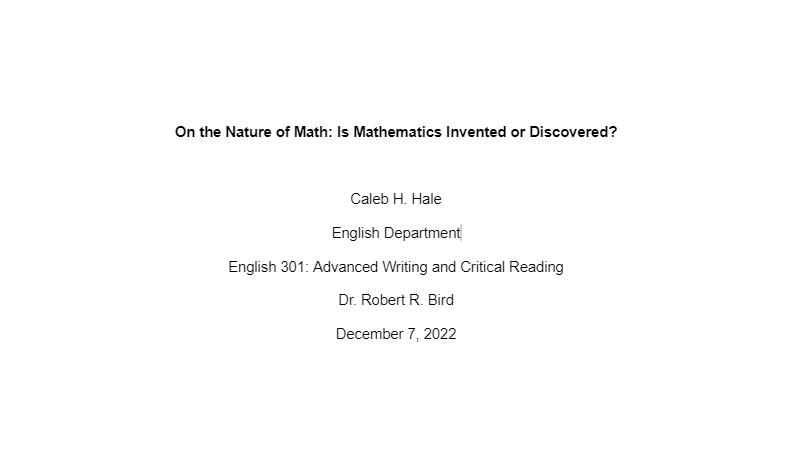

About Me
I am a very curious person who loves learning things. I am intrigued by many science and math topics, but I also love creative writing and have planned and written on a lot of stories. I have not yet published any, but might do so in the future. I write primarily fiction but my studies often lead me to the most fundamental parts of reality I can find, like quantum mechanics and advanced, abstract math topics. I look forward to coming to understand the big questions of the universe someday, but in the meantime, I want to make a positive difference in the world, teaching and serving others. You can check out some of my accomplishments on LinkedIn, Github, or the other tabs in the menu above. And of course, I made this website. You can also see my Google Site I made during my education courses for my TESOL certificate.
My math interests include intuitive geometry, group theory, and number theory

My writing interests include many fiction and fantasy books and short stories
